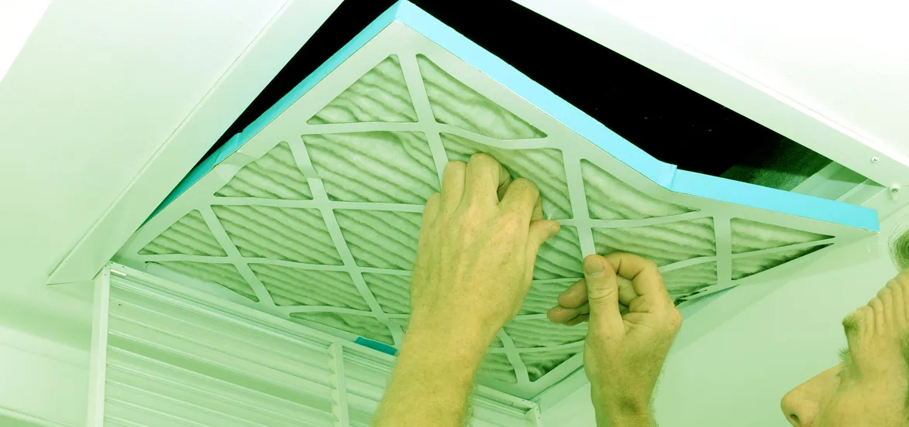

How Often Should The Air Conditioner Filters Be Changed?
Publish Date : 2025-02-18
Views : 1200

During certain seasons, you need to extract soot, dust, and other 'airborne particles' from the filters of the air conditioner for a steady and appropriate supply of ventilation. Thereby, you should facilitate removing microbes, smoke, debris, and other 'foreign material' from the air filters. Here, we have discussed the importance, benefits, and how frequently the air filter cleaners need to be changed. We always prefer living in luxury. We don't appreciate it, but air conditioning has many advantages over comfort. In our own houses, air conditioning may offer us safety and enjoyment. During the summers, efficiently keeping the interior air cool; in the winter, have the ability to at least partially warm rooms. Purchase and servicing of the air conditioner filters should be done on a regular basis, thereby maintaining hygiene and cleanliness.
Mechanism Followed To Clean Air Conditioner Filter
Air conditioners can make a room cool only if the windows and doors remain closed. The mechanism then distributes cooler air back into the structure. Additionally, you can reduce the temperature by getting it blown over a series of air cooler pipes, best known as the 'Evaporator coil in the machine' that works like a refrigerator. The evaporator coil in the air filter remains filled with refrigerant or coolant, which absorbs thermal energy and transforms from a liquid to a gas. It then gets poured towards the outside of the building through a different coil; here it returns and cools to its fluid form. This is why the condenser is the system referring to the external circuit. The refrigerant is pumped between the two coils by a compressor, which further alters the pressure of the refrigerant to ensure that it completely evaporates and condenses in the proper coils. The compressor's motor absorbs all of the power needed to perform this task, and the system typically delivers three times the cooling capacity generated by the compressor. This is due to the coolant changing condition to water vapor, allowing significantly more energy transfer than the compressor requires. Before the expansion of new air conditioning, cooling was performed by handling vast chunks of ice. When air conditioners were launched, they were quantified by the volume of ice that would have dissipated per day, giving rise to the term "tonne."Why Do You Need Clean Air Conditioning Filters?
For keeping the air conditioner fresh, you need to remove the airborne particles in filters. Most air conditioning systems incorporate a filter above the evaporator coil that extracts pollutants. The air filter cleaner would become progressively congested with random particles as it serves its function, lowering airflow. If you do not replace these filters, the flow rate will be limited, and they will become a new threat to the environment. The simplest option to deal with limited airflow is to change the air conditioner's filters or clean the air conditioner filter regularly with a professional air filter cleaner to ensure it functions optimally. There are a lot of techniques and methods that can increase the efficiency of the air conditioners.- Blocking any leakage ducts and some AC filter cleaning and wiping the coils are amongst the most that someone can do to enhance the air conditioning unit's effectiveness.
- Another method to improve the productivity of an air conditioner is to make sure that nothing is restricting the air circulation. Choosing an air conditioner that is appropriate for the climate can ensure that it is not wasting excess energy. The longevity of the air conditioners matters the most. If the electronic apparatus is appropriately maintained, it can provide excellent performance.
- The clean air conditioner filter can offer additional effects by lowering the volume of work it requires to do. A lot of fuel needed for cooling and heating can be improved by limiting the house's insulation or limiting other air draughts. If a person needs to rebuild or remodel a house, adopting high-efficiency materials will benefit air conditioning effectiveness. It's best for you to use extraction fans in the kitchen and bathroom to remove excess humidity, and energy-efficient equipment will all add to the home's efficiency.
Importance of Changing Filters
AC filter cleaning is indeed an important, yet usually overlooked, aspect of a central HVAC system. The clean air filters don't just filter away from dirt and particles that would move across the home, affecting indoor air quality. They also act as a defense line against more significant items being dragged into the circuit, such as pieces of loose insulation, which might cause damage or provide a danger. However, if one doesn't change the air filter regularly, it may start working versus us. The most significant reason for HVAC malfunction is clogged filters. At some point, every air handled by the HVAC system goes through the air filter. The microscopic mesh through which air flows grows denser as the filter absorbs more and more of the home's natural sulfate aerosols - dust, mold and pet hair, fabric threads, and so on. This implies that if a person doesn't change the air filter regularly, air won't flow as freely.Effect of Dirty Air Filters
The HVAC system blowing fan needs to keep working to the free version. When it tries harder, it takes more power, which results in higher costs. It's also more prone to break down as a result of ongoing operation. In addition to the problem of moving air, living spaces may not collect most of the air they require. That implies a person has troubled home safety, and the thermostat that monitors when the HVAC system powers on and off may never measure the temperature needed to turn the system off. That's an additional cost, and it puts extra strain on the motor even though heating and cooling air can't move as readily out of the air conditioner, thereby regulating the uncertainties of overheating or freezing. There will be no difference in interior temperature if the same volume of energy is spent or uses the same gas or volume. The excess padding on the clean air conditioner filter alone can hold water, allowing mold or bacteria colonies to form. These create more excellent resistance to air passing, but if they increase the improper side of the filter, they tend to transfer new impurities and irritants into the inner air. And if they sneak into the HVAC system and develop nests there, the existing network may be in serious peril. Since this air isn't moving as fast, pollutants might collect in vents and on domestic materials instead of being transported into the unit and purified. It's a little essential to update the air filter by arranging a pipe cleaning process, but filthy ducts may be a protracted cause of contaminants in the air supply and cause a drain on your system's performance.Benefits of a Clean Air Conditioners
1. Reduces Asthma Attack Risk The air conditioning in the household can minimize the possibility of getting an asthma attack. Running an air conditioner decreases humidity in the house. Still, it could also lower the effects of pollen, smoke, mold, and other airborne particles that generally aggravates asthma symptoms. Air conditioners can also limit the risk of exposure to dust mites and other indoor pollutants. The air filter cleaner in heaters and air conditioners on a consistent schedule is another important way of preventing acute exacerbations. Other home solutions include:- Changing carpet with wood or laminate
- Scrubbing floors and other steamy parts of the home to eliminate harmful bacteria
- Limiting dogs to avoid contact with animal dander
- Cleaning while wearing a mask
Conclusion
It's a good idea to replace the air filter cleaner after a couple of months, particularly if a person has pets or lives in a filthy location. Air filters are typically inexpensive, and updating these is a short process and does not need the expertise of a technician. In most instances, just slipping out the older filter and slipping in a new one should serve. Examine the furnace's paperwork to see how much-sized filter one will need and what MERV (minimum efficiency reporting value) range it will be in. A high MERV filter with an excellent grid may be too much for some machines, resulting in a congested air filter issue even after replacing it. If you are unsure about the right air filter or how to fix it, call EZ Heat and Air professionals to replace the AC filter regularly, along with our HVAC maintenance services. Make EZ Heat and Air your new go for HVAC installation, repair, and replacement, and ensure your HVAC keeps running just as it is meant to be! Learn more about our AC maintenance and repair services here!Category